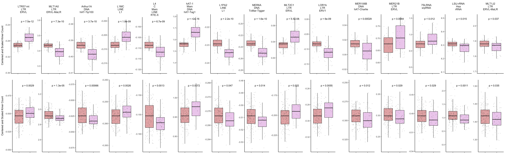

3B
Last updated: 2023-12-22
Checks: 6 1
Knit directory:
annapragada2024_artemis_code/
This reproducible R Markdown analysis was created with workflowr (version 1.6.2). The Checks tab describes the reproducibility checks that were applied when the results were created. The Past versions tab lists the development history.
The R Markdown is untracked by Git. To know which version of the R
Markdown file created these results, you’ll want to first commit it to
the Git repo. If you’re still working on the analysis, you can ignore
this warning. When you’re finished, you can run
wflow_publish to commit the R Markdown file and build the
HTML.
Great job! The global environment was empty. Objects defined in the global environment can affect the analysis in your R Markdown file in unknown ways. For reproduciblity it’s best to always run the code in an empty environment.
The command set.seed(20231222) was run prior to running
the code in the R Markdown file. Setting a seed ensures that any results
that rely on randomness, e.g. subsampling or permutations, are
reproducible.
Great job! Recording the operating system, R version, and package versions is critical for reproducibility.
Nice! There were no cached chunks for this analysis, so you can be confident that you successfully produced the results during this run.
Great job! Using relative paths to the files within your workflowr project makes it easier to run your code on other machines.
Great! You are using Git for version control. Tracking code development and connecting the code version to the results is critical for reproducibility.
The results in this page were generated with repository version 1d0c4f5. See the Past versions tab to see a history of the changes made to the R Markdown and HTML files.
Note that you need to be careful to ensure that all relevant files for
the analysis have been committed to Git prior to generating the results
(you can use wflow_publish or
wflow_git_commit). workflowr only checks the R Markdown
file, but you know if there are other scripts or data files that it
depends on. Below is the status of the Git repository when the results
were generated:
Ignored files:
Ignored: code/.DS_Store
Ignored: data/.DS_Store
Ignored: output/.DS_Store
Untracked files:
Untracked: analysis/Fig2a_S11_S16.Rmd
Untracked: analysis/Fig2b_S7.Rmd
Untracked: analysis/Fig2c_S8a.Rmd
Untracked: analysis/Fig2d_S10_LINE1.Rmd
Untracked: analysis/Fig2e_S13.Rmd
Untracked: analysis/Fig3a.Rmd
Untracked: analysis/Fig3b.Rmd
Untracked: analysis/Fig4_Epi.Rmd
Untracked: analysis/Fig5_LUCAS.Rmd
Untracked: analysis/SessionInfo.Rmd
Untracked: analysis/figS12.Rmd
Untracked: analysis/figS14.Rmd
Untracked: analysis/figS15.Rmd
Untracked: analysis/figS17.Rmd
Untracked: analysis/figS18_epi.Rmd
Untracked: analysis/figS20_Ideogram.Rmd
Untracked: analysis/figS21a_featureimp.Rmd
Untracked: analysis/figS21bc_stability.Rmd
Untracked: analysis/figS22_liver.Rmd
Untracked: analysis/figS23_24_lungval.Rmd
Untracked: analysis/figS25.Rmd
Untracked: analysis/figS2_S3abc.Rmd
Untracked: analysis/figS3d_S4.Rmd
Untracked: analysis/figS5_S6_simulations.Rmd
Untracked: analysis/figS8bc.Rmd
Untracked: analysis/figS9.Rmd
Untracked: code/ARTEMIS_Pipeline/
Untracked: code/Table1.Rmd
Untracked: code/Table2.Rmd
Untracked: code/Tissue_Models/
Untracked: code/cfDNA_Models/
Untracked: code/rlucas/
Untracked: code/useful.stuff.aa/
Untracked: data/CN_Analysis/
Untracked: data/Cristiano_Detection/
Untracked: data/Cristiano_TOO/
Untracked: data/Downsamples/
Untracked: data/Epi/
Untracked: data/Epi_Reference_Bins.csv
Untracked: data/Extended Data Fig.12_recurrence_analysis_Mathios_etal.xlsx
Untracked: data/Final_LUCAS_Ensemble/
Untracked: data/Final_Liver_Risk_Ensemble/
Untracked: data/GSEA/
Untracked: data/Get_Numbers/
Untracked: data/Kmer_Distributions/
Untracked: data/LINE1/
Untracked: data/LUCAS_Stability_Analysis/
Untracked: data/Liver_Published_delfi-results_risk.csv
Untracked: data/Lung_Monitoring/
Untracked: data/Mathios_Published/
Untracked: data/Mathios_batching.xlsx
Untracked: data/NoveltyTables/
Untracked: data/PCAWG/
Untracked: data/Plasma_CV_meta_HiSeq.csv
Untracked: data/Plasma_CV_meta_Novaseq.csv
Untracked: data/Simulation/
Untracked: data/Supp_Tables/
Untracked: data/TCGA/
Untracked: data/cfDNA_manifest_HiSeq.txt
Untracked: data/focal_pcawg/
Untracked: data/lucas_nova_artemis.csv
Untracked: data/process_pcawg/
Unstaged changes:
Modified: README.md
Modified: analysis/about.Rmd
Modified: analysis/index.Rmd
Modified: analysis/license.Rmd
Deleted: output/README.md
Note that any generated files, e.g. HTML, png, CSS, etc., are not included in this status report because it is ok for generated content to have uncommitted changes.
There are no past versions. Publish this analysis with
wflow_publish() to start tracking its development.
library(here)here() starts at /Users/akshayaannapragada/Dropbox/ScannedNotes/VelculescuLab/Cancer Genomics Lab/plasma_repeats/annapragada2024_artemis_codelibrary(data.table)
library(tidyverse)── Attaching packages ─────────────────────────────────────── tidyverse 1.3.1 ──✔ ggplot2 3.3.5 ✔ purrr 0.3.4
✔ tibble 3.1.6 ✔ dplyr 1.0.8
✔ tidyr 1.2.0 ✔ stringr 1.4.0
✔ readr 2.0.1 ✔ forcats 0.5.1── Conflicts ────────────────────────────────────────── tidyverse_conflicts() ──
✖ dplyr::between() masks data.table::between()
✖ dplyr::filter() masks stats::filter()
✖ dplyr::first() masks data.table::first()
✖ dplyr::lag() masks stats::lag()
✖ dplyr::last() masks data.table::last()
✖ purrr::transpose() masks data.table::transpose()library(devtools)Loading required package: usethislibrary(ggplot2)
library(ggpubr)
library(cowplot)
Attaching package: 'cowplot'The following object is masked from 'package:ggpubr':
get_legendlibrary(caret)Loading required package: lattice
Attaching package: 'caret'The following object is masked from 'package:purrr':
liftlibrary(recipes)
Attaching package: 'recipes'The following object is masked from 'package:devtools':
checkThe following object is masked from 'package:stringr':
fixedThe following object is masked from 'package:stats':
steplibrary(pROC)Type 'citation("pROC")' for a citation.
Attaching package: 'pROC'The following objects are masked from 'package:stats':
cov, smooth, varlibrary(readxl)
library(scales)
Attaching package: 'scales'The following object is masked from 'package:purrr':
discardThe following object is masked from 'package:readr':
col_factorplasma<-fread(here("data","Final_LUCAS_Ensemble","LUCAS_artemis.csv"))
plasma<-plasma %>% select(-V1)
meta<-fread(here("data","Plasma_CV_meta_HiSeq.csv"))
manifest<-fread(here("data","cfDNA_manifest_HiSeq.txt"))
selected<-manifest %>% filter(LUCAS_Hi==TRUE)
meta<-meta %>% filter(id %in% selected$id)
plasma<-plasma %>% filter(id %in% meta$id)
plasma<-inner_join(plasma, meta %>% select(type,Subtype,id),by="id")
plasma<-plasma %>% filter(Subtype=="Squamous"|type=="healthy")
test<-plasma %>% gather(key=feature,value=count,-id,-type,-Subtype)
e<-fread(here("data","Kmer_Distributions","Expected.csv"))
e<-e %>% filter(total_kmers>1000)
e$fam<-sapply(str_split(e$feature,"#"),"[",2)
e$fam<-sapply(str_split(e$fam,"_"),"[",1)
e<-e %>% mutate(fam=if_else(is.na(fam),"Satellite",fam))
e<-e %>% mutate(fam=if_else(fam %in% c("rRNA","snRNA","scRNA","tRNA","srpRNA"),"RNA/DNA Elements",fam))
e<-e %>% mutate(fam=if_else(fam %in% c("DNA","DNA?","RC","Retroposon"),"RNA/DNA Elements",fam))
test<-inner_join(test,e %>% select(feature,fam),by="feature")
test$count<-as.numeric(test$count)
test<-test %>% group_by(id,fam,type) %>% summarize(c=scale(count)[,1],f=feature)`summarise()` has grouped output by 'id', 'fam', 'type'. You can override using
the `.groups` argument.test<-test %>% ungroup() %>% select(-fam)
plasma<-test
plasma$cohort<-"Plasma"
plasma<-plasma %>% mutate(type=if_else(type=="cancer","LUSC","Non-cancer"))
all_samples<-fread(here("data","TCGA","repository_1680116108.tsv"))
ploidy<-readRDS(here("data","TCGA","tcga_data_export_for_artemis_20230404.rds"))
ploidy<-inner_join(ploidy,all_samples,by=c("dcc_file_id"="File ID"))
exc<-read_xlsx(here("data","TCGA","pcawg-exclusion-list.xlsx"))
ploidy<-ploidy %>% filter(!`ICGC Donor` %in% exc$icgc_donor_id)
pcawg2<-fread(here("data","PCAWG","artemis_PCAWG1.csv"))
pcawg2<-pcawg2 %>% tibble() %>% select(-V1)
#pcawg<-pcawg %>% tibble()
#pcawg2<-pcawg2 %>% filter(!id %in% pcawg$id)
#pcawg<-rbind(pcawg,pcawg2)
pcawg<-pcawg2
pcawg<-pcawg %>% mutate(type=if_else(grepl("tumor",id),"cancer","healthy"))
pcawg$id<-sapply(str_split(pcawg$id,"_"),"[",1)
pcawg<-pcawg %>% filter(id %in% ploidy$`ICGC Donor`)
pcawg<-inner_join(pcawg,ploidy %>% select(`ICGC Donor`,project_id),by=c("id"="ICGC Donor"))
####
pcawg<-pcawg %>% filter(project_id %in% c("PCAWG-TCGA-LUSC-US"))
pcawg<-pcawg %>% select(-project_id)
test<-pcawg %>% gather(key=feature,value=count,-id,-type)
#Add info needed to center/scale by family
test$fam<-sapply(str_split(test$feature,"#"),"[",2)
test<-test %>% mutate(fam=if_else(is.na(fam),"Satellite",fam))
test$bigfam<-sapply(str_split(test$fam,"_"),"[",1)
test<-test %>% mutate(bigfam=if_else(grepl("RNA",bigfam),"RNA",bigfam))
test<-test %>% mutate(bigfam=if_else(bigfam %in% c("DNA","DNA?","RC","Retroposon"),"TEs",bigfam))
pcawg<-test %>% group_by(id,type,bigfam)%>%summarize(c=scale(count)[,1],f=feature)`summarise()` has grouped output by 'id', 'type', 'bigfam'. You can override
using the `.groups` argument.#test<-test %>% rename("count"="c") %>% rename("feature"="f")
#pcawg<-test %>% ungroup() %>% select(-bigfam) %>% spread(key=feature,value=count)
pcawg<-pcawg %>% ungroup()
pcawg$cohort<-"PCAWG"
pcawg<-pcawg %>% mutate(type=if_else(type=="cancer","LUSC","Non-cancer")) %>% select(-bigfam)
plasma_h_med<-plasma %>% filter(type=="Non-cancer") %>% group_by(f) %>% summarize(m=median(c))
plasma_meds<-plasma %>% group_by(f) %>% summarize(max=max(c),min=min(c))
plasma_meds<-inner_join(plasma_h_med,plasma_meds,by="f")
plasma_meds$hi_diff<-plasma_meds$max-plasma_meds$m
plasma_meds$low_diff<-plasma_meds$m-plasma_meds$min
plasma_meds<-plasma_meds %>% mutate(c=if_else(hi_diff>low_diff,m-hi_diff,m+low_diff))
plasma_meds$id<-"test"
plasma_meds$type<-"Non-cancer"
plasma_meds$cohort<-"Plasma"
#plasma_h_med<-plasma %>% filter(type=="Non-cancer") %>% group_by(f) %>% summarize(m=median(c))
#plasma<-inner_join(plasma,plasma_h_med,by="f")
#plasma$c<-plasma$c-plasma$m
#plasma<-plasma %>% select(-m)
pcawg_h_med<-pcawg %>% filter(type=="Non-cancer") %>% group_by(f) %>% summarize(m=median(c))
pcawg_meds<-pcawg %>% group_by(f) %>% summarize(max=max(c),min=min(c))
pcawg_meds<-inner_join(pcawg_h_med,pcawg_meds,by="f")
pcawg_meds$hi_diff<-pcawg_meds$max-pcawg_meds$m
pcawg_meds$low_diff<-pcawg_meds$m-pcawg_meds$min
pcawg_meds<-pcawg_meds %>% mutate(c=if_else(hi_diff>low_diff,m-hi_diff,m+low_diff))
pcawg_meds$id<-"test"
pcawg_meds$type<-"Non-cancer"
pcawg_meds$cohort<-"PCAWG"
#pcawg_h_med<-pcawg %>% filter(type=="Non-cancer") %>% group_by(f) %>% summarize(m=median(c))
#pcawg<-inner_join(pcawg,pcawg_h_med,by="f")
#pcawg$c<-pcawg$c-pcawg$m
#pcawg<-pcawg %>% select(-m)
data<-rbind(plasma,pcawg)
data<-data %>% filter(f %in% e$feature)
good_f<-compare_means(c~type, plasma,group.by="f") %>% filter(p<.05)
top<-fread(here("data","Supp_Tables","s6_All_features.csv"))
top<-top %>% select(feature,fam,bigfam,contains("LUSC"))
tops<- top %>% filter(LUSC_p<.05) %>% filter(feature %in% good_f$f) %>% filter(feature %in% e$feature)
top<-top %>% filter(LUSC_p<.05) %>% filter(feature %in% good_f$f) %>% filter(feature %in% e$feature) %>% slice_max(order_by=abs(LUSC_effsize),n=5)
data2<-data %>% filter(f %in% tops$feature)
data2<-data2 %>% group_by(f,cohort,type) %>% summarize(n=median(c))`summarise()` has grouped output by 'f', 'cohort'. You can override using the
`.groups` argument.data2<-data2 %>% spread(key=type,value=n)
data2<-data2 %>% mutate(cancer_high=if_else(LUSC>`Non-cancer`,"TRUE","FALSE"))
data2<-data2 %>% select(f,cohort,cancer_high) %>% spread(key=cohort,value=cancer_high)
nrow(data2 %>% filter(PCAWG == Plasma))[1] 39nrow(data2)[1] 86data<-data %>% filter(f %in% top$feature)
data$type<-factor(data$type,levels=c("Non-cancer","LUSC"))
data<-inner_join(data,top,by=c("f"="feature"))
top$feature<-gsub("#","\n",top$feature)
data$f<-gsub("#","\n",data$f)
top$feature<-gsub("_","\n",top$feature)
data$f<-gsub("_","\n",data$f)
data$f<-factor(data$f,levels=top$feature)
#data<-data %>% filter(bigfam=="LINE")
pcawg<-data %>% filter(cohort=="PCAWG")
plasma<-data %>% filter(cohort=="Plasma")
pcawg_meds$f<-gsub("#","\n",pcawg_meds$f)
plasma_meds$f<-gsub("#","\n",plasma_meds$f)
pcawg_meds$f<-gsub("_","\n",pcawg_meds$f)
plasma_meds$f<-gsub("_","\n",plasma_meds$f)
pcawg_meds<-pcawg_meds %>% filter(f %in% pcawg$f)
plasma_meds<-plasma_meds %>% filter(f %in% plasma$f)
pcawg_meds$f<-factor(pcawg_meds$f,levels=top$feature)
plasma_meds$f<-factor(plasma_meds$f,levels=top$feature)
library(cowplot)
sc_a<-ggplot(pcawg,aes(x=type,y=c,fill=type))+facet_wrap(vars(f),nrow=1,scales="free")+theme_classic(base_size =12)+geom_boxplot(outlier.shape=NA,alpha=.5)+geom_jitter(color="black",size=.3,alpha=.25)+theme(legend.position="none",strip.placement = "outside",strip.background = element_blank(),strip.text=element_text(size=12),axis.text.x=element_blank())+xlab("")+ylab("")+scale_fill_discrete(type=c("indianred","plum"))+stat_compare_means(method = "wilcox.test",label = "p.format",size=4,label.x.npc="middle",label.y.npc=.95)+geom_blank(data=pcawg_meds)
sc_b<-ggplot(plasma,aes(x=type,y=c,fill=type))+facet_wrap(vars(f),nrow=1,scales="free")+theme_classic(base_size =12)+geom_boxplot(outlier.shape=NA,alpha=.5)+geom_jitter(color="black",size=.3,alpha=.25)+theme(legend.position="none",strip.text=element_blank(),axis.text.x=element_blank())+#stat_compare_means(label.x.npc="middle",label.y.npc=.15)+
xlab("")+ylab("")+scale_fill_discrete(type=c("indianred","plum"))+
stat_compare_means(method = "wilcox.test",label = "p.format",size=4,label.x.npc="middle",label.y.npc=.95)+geom_blank(data=plasma_meds)
lusc<-plot_grid(sc_a,sc_b,ncol=1,rel_heights=c(1,1))
#save_data_1a<-inner_join(plasma,lucas_meta %>% select(id,cg_id),by="id")
#save_data_1a$id<-save_data_1a$cg_id
#save_data_1a$cg_id<-NULL
#save_data_1<-rbind(pcawg,save_data_1a)
#save_data_1<-save_data_1 %>% select(id,type,c,f)
#save_data_1$panel<-"Lung Squamous Cell Cancer"plasma<-fread(here("data","Final_LUCAS_Ensemble","LUCAS_artemis.csv"))
plasma<-plasma %>% select(-V1)
meta<-fread(here("data","Plasma_CV_meta_HiSeq.csv"))
manifest<-fread(here("data","cfDNA_manifest_HiSeq.txt"))
selected<-manifest %>% filter(LUCAS_Hi==TRUE)
meta<-meta %>% filter(id %in% selected$id)
plasma<-plasma %>% filter(id %in% meta$id)
plasma<-inner_join(plasma, meta %>% select(type,Subtype,id),by="id")
plasma<-plasma %>% filter(Subtype=="Adenocarcinoma"|type=="healthy")
test<-plasma %>% gather(key=feature,value=count,-id,-type,-Subtype)
e<-fread(here("data","Kmer_Distributions","Expected.csv"))
e<-e %>% filter(total_kmers>1000)
e$fam<-sapply(str_split(e$feature,"#"),"[",2)
e$fam<-sapply(str_split(e$fam,"_"),"[",1)
e<-e %>% mutate(fam=if_else(is.na(fam),"Satellite",fam))
e<-e %>% mutate(fam=if_else(fam %in% c("rRNA","snRNA","scRNA","tRNA","srpRNA"),"RNA/DNA Elements",fam))
e<-e %>% mutate(fam=if_else(fam %in% c("DNA","DNA?","RC","Retroposon"),"RNA/DNA Elements",fam))
test<-inner_join(test,e %>% select(feature,fam),by="feature")
test$count<-as.numeric(test$count)
test<-test %>% group_by(id,fam,type) %>% summarize(c=scale(count)[,1],f=feature)`summarise()` has grouped output by 'id', 'fam', 'type'. You can override using
the `.groups` argument.test<-test %>% ungroup() %>% select(-fam)
plasma<-test
plasma$cohort<-"Plasma"
plasma<-plasma %>% mutate(type=if_else(type=="cancer","LUAD","Non-cancer"))
all_samples<-fread(here("data","TCGA","repository_1680116108.tsv"))
ploidy<-readRDS(here("data","TCGA","tcga_data_export_for_artemis_20230404.rds"))
ploidy<-inner_join(ploidy,all_samples,by=c("dcc_file_id"="File ID"))
exc<-read_xlsx(here("data","TCGA","pcawg-exclusion-list.xlsx"))
ploidy<-ploidy %>% filter(!`ICGC Donor` %in% exc$icgc_donor_id)
pcawg2<-fread(here("data","PCAWG","artemis_PCAWG1.csv"))
pcawg2<-pcawg2 %>% tibble() %>% select(-V1)
#pcawg<-pcawg %>% tibble()
#pcawg2<-pcawg2 %>% filter(!id %in% pcawg$id)
#pcawg<-rbind(pcawg,pcawg2)
pcawg<-pcawg2
pcawg<-pcawg %>% mutate(type=if_else(grepl("tumor",id),"cancer","healthy"))
pcawg$id<-sapply(str_split(pcawg$id,"_"),"[",1)
pcawg<-pcawg %>% filter(id %in% ploidy$`ICGC Donor`)
pcawg<-inner_join(pcawg,ploidy %>% select(`ICGC Donor`,project_id),by=c("id"="ICGC Donor"))
####
pcawg<-pcawg %>% filter(project_id %in% c("PCAWG-TCGA-LUAD-US"))
pcawg<-pcawg %>% select(-project_id)
test<-pcawg %>% gather(key=feature,value=count,-id,-type)
#Add info needed to center/scale by family
test$fam<-sapply(str_split(test$feature,"#"),"[",2)
test<-test %>% mutate(fam=if_else(is.na(fam),"Satellite",fam))
test$bigfam<-sapply(str_split(test$fam,"_"),"[",1)
test<-test %>% mutate(bigfam=if_else(grepl("RNA",bigfam),"RNA",bigfam))
test<-test %>% mutate(bigfam=if_else(bigfam %in% c("DNA","DNA?","RC","Retroposon"),"TEs",bigfam))
pcawg<-test %>% group_by(id,type,bigfam)%>%summarize(c=scale(count)[,1],f=feature)`summarise()` has grouped output by 'id', 'type', 'bigfam'. You can override
using the `.groups` argument.#test<-test %>% rename("count"="c") %>% rename("feature"="f")
#pcawg<-test %>% ungroup() %>% select(-bigfam) %>% spread(key=feature,value=count)
pcawg<-pcawg %>% ungroup()
pcawg$cohort<-"PCAWG"
pcawg<-pcawg %>% mutate(type=if_else(type=="cancer","LUAD","Non-cancer")) %>% select(-bigfam)
plasma_h_med<-plasma %>% filter(type=="Non-cancer") %>% group_by(f) %>% summarize(m=median(c))
plasma_meds<-plasma %>% group_by(f) %>% summarize(max=max(c),min=min(c))
plasma_meds<-inner_join(plasma_h_med,plasma_meds,by="f")
plasma_meds$hi_diff<-plasma_meds$max-plasma_meds$m
plasma_meds$low_diff<-plasma_meds$m-plasma_meds$min
plasma_meds<-plasma_meds %>% mutate(c=if_else(hi_diff>low_diff,m-hi_diff,m+low_diff))
plasma_meds$id<-"test"
plasma_meds$type<-"Non-cancer"
plasma_meds$cohort<-"Plasma"
#plasma_h_med<-plasma %>% filter(type=="Non-cancer") %>% group_by(f) %>% summarize(m=median(c))
#plasma<-inner_join(plasma,plasma_h_med,by="f")
#plasma$c<-plasma$c-plasma$m
#plasma<-plasma %>% select(-m)
pcawg_h_med<-pcawg %>% filter(type=="Non-cancer") %>% group_by(f) %>% summarize(m=median(c))
pcawg_meds<-pcawg %>% group_by(f) %>% summarize(max=max(c),min=min(c))
pcawg_meds<-inner_join(pcawg_h_med,pcawg_meds,by="f")
pcawg_meds$hi_diff<-pcawg_meds$max-pcawg_meds$m
pcawg_meds$low_diff<-pcawg_meds$m-pcawg_meds$min
pcawg_meds<-pcawg_meds %>% mutate(c=if_else(hi_diff>low_diff,m-hi_diff,m+low_diff))
pcawg_meds$id<-"test"
pcawg_meds$type<-"Non-cancer"
pcawg_meds$cohort<-"PCAWG"
#pcawg_h_med<-pcawg %>% filter(type=="Non-cancer") %>% group_by(f) %>% summarize(m=median(c))
#pcawg<-inner_join(pcawg,pcawg_h_med,by="f")
#pcawg$c<-pcawg$c-pcawg$m
#pcawg<-pcawg %>% select(-m)
data<-rbind(plasma,pcawg)
data<-data %>% filter(f %in% e$feature)
good_f<-compare_means(c~type, plasma,group.by="f") %>% filter(p<.05)
top<-fread(here("data","Supp_Tables","s6_All_features.csv"))
top<-top %>% select(feature,fam,bigfam,contains("LUAD"))
tops<- top %>% filter(LUAD_p<.05) %>% filter(feature %in% good_f$f) %>% filter(feature %in% e$feature)
top<-top %>% filter(LUAD_p<.05) %>% filter(feature %in% good_f$f) %>% filter(feature %in% e$feature) %>% slice_max(order_by=abs(LUAD_effsize),n=5)
data2<-data %>% filter(f %in% tops$feature)
data2<-data2 %>% group_by(f,cohort,type) %>% summarize(n=median(c))`summarise()` has grouped output by 'f', 'cohort'. You can override using the
`.groups` argument.data2<-data2 %>% spread(key=type,value=n)
data2<-data2 %>% mutate(cancer_high=if_else(LUAD>`Non-cancer`,"TRUE","FALSE"))
data2<-data2 %>% select(f,cohort,cancer_high) %>% spread(key=cohort,value=cancer_high)
nrow(data2 %>% filter(PCAWG == Plasma))[1] 4nrow(data2)[1] 6data<-data %>% filter(f %in% top$feature)
data$type<-factor(data$type,levels=c("Non-cancer","LUAD"))
data<-inner_join(data,top,by=c("f"="feature"))
top$feature<-gsub("#","\n",top$feature)
data$f<-gsub("#","\n",data$f)
top$feature<-gsub("_","\n",top$feature)
data$f<-gsub("_","\n",data$f)
top$feature<-paste0(top$feature,"\n")
data$f<-paste0(data$f,"\n")
data$f<-factor(data$f,levels=top$feature)
#data<-data %>% filter(bigfam=="LINE")
pcawg<-data %>% filter(cohort=="PCAWG")
plasma<-data %>% filter(cohort=="Plasma")
pcawg_meds$f<-gsub("#","\n",pcawg_meds$f)
plasma_meds$f<-gsub("#","\n",plasma_meds$f)
pcawg_meds$f<-gsub("_","\n",pcawg_meds$f)
plasma_meds$f<-gsub("_","\n",plasma_meds$f)
pcawg_meds$f<-paste0(pcawg_meds$f,"\n")
plasma_meds$f<-paste0(plasma_meds$f,"\n")
pcawg_meds<-pcawg_meds %>% filter(f %in% pcawg$f)
plasma_meds<-plasma_meds %>% filter(f %in% plasma$f)
pcawg_meds$f<-factor(pcawg_meds$f,levels=top$feature)
plasma_meds$f<-factor(plasma_meds$f,levels=top$feature)
library(cowplot)
lu_a<-ggplot(pcawg,aes(x=type,y=c,fill=type))+facet_wrap(vars(f),nrow=1,scales="free")+theme_classic(base_size =12)+geom_boxplot(outlier.shape=NA,alpha=.5)+geom_jitter(color="black",size=.3,alpha=.25)+theme(legend.position="none",strip.placement = "outside",strip.background = element_blank(),strip.text=element_text(size=12),axis.text.x=element_blank())+xlab("")+ylab("")+scale_fill_discrete(type=c("indianred","plum"))+stat_compare_means(method = "wilcox.test",label = "p.format",size=4,label.x.npc="middle",label.y.npc=.95)+geom_blank(data=pcawg_meds)
lu_b<-ggplot(plasma,aes(x=type,y=c,fill=type))+facet_wrap(vars(f),nrow=1,scales="free")+theme_classic(base_size =12)+geom_boxplot(outlier.shape=NA,alpha=.5)+geom_jitter(color="black",size=.3,alpha=.25)+theme(legend.position="bottom",strip.text=element_blank(),axis.text.x=element_blank())+#stat_compare_means(label.x.npc="middle",label.y.npc=.15)+
xlab("")+ylab("")+scale_fill_discrete(type=c("indianred","plum"),labels=c("Non-cancer","Cancer"),name="")+
stat_compare_means(method = "wilcox.test",label = "p.format",size=4,label.x.npc="middle",label.y.npc=.95)+geom_blank(data=plasma_meds)
legend<-get_legend(lu_b)
lu_b<-lu_b+theme(legend.position="none")
library(cowplot)
luad<-plot_grid(lu_a,lu_b,ncol=1,rel_heights=c(1,1))
#save_data_2a<-inner_join(plasma,lucas_meta %>% select(id,cg_id),by="id")
#save_data_2a$id<-save_data_2a$cg_id
#save_data_2a$cg_id<-NULL
#save_data_2<-rbind(pcawg,save_data_2a)
#save_data_2<-save_data_2 %>% select(id,type,c,f)
#save_data_2$panel<-"Lung Adenocarcinoma"plasma<-fread(here("data","Final_Liver_Risk_Ensemble","Liver_artemis.csv"))
plasma<-plasma %>% select(-V1)
meta<-fread(here("data","Plasma_CV_meta_Novaseq.csv"))
selected<-meta %>% filter(Liver==TRUE)
meta<-meta %>% filter(id %in% selected$id)
plasma<-plasma %>% filter(id %in% meta$id)
plasma<-inner_join(plasma, meta %>% select(type,Subtype,id),by="id")
plasma<-plasma %>% filter(Subtype != "Non-cancer" )
test<-plasma %>% gather(key=feature,value=count,-id,-type,-Subtype)
e<-fread(here("data","Kmer_Distributions","Expected.csv"))
e<-e %>% filter(total_kmers>1000)
e$fam<-sapply(str_split(e$feature,"#"),"[",2)
e$fam<-sapply(str_split(e$fam,"_"),"[",1)
e<-e %>% mutate(fam=if_else(is.na(fam),"Satellite",fam))
e<-e %>% mutate(fam=if_else(fam %in% c("rRNA","snRNA","scRNA","tRNA","srpRNA"),"RNA/DNA Elements",fam))
e<-e %>% mutate(fam=if_else(fam %in% c("DNA","DNA?","RC","Retroposon"),"RNA/DNA Elements",fam))
test<-inner_join(test,e %>% select(feature,fam),by="feature")
test$count<-as.numeric(test$count)
test<-test %>% group_by(id,fam,type) %>% summarize(c=scale(count)[,1],f=feature)`summarise()` has grouped output by 'id', 'fam', 'type'. You can override using
the `.groups` argument.test<-test %>% ungroup() %>% select(-fam)
plasma<-test
plasma$cohort<-"Plasma"
plasma<-plasma %>% mutate(type=if_else(type=="cancer","LIHC","Non-cancer"))
all_samples<-fread(here("data","TCGA","repository_1680116108.tsv"))
ploidy<-readRDS(here("data","TCGA","tcga_data_export_for_artemis_20230404.rds"))
ploidy<-inner_join(ploidy,all_samples,by=c("dcc_file_id"="File ID"))
exc<-read_xlsx(here("data","TCGA","pcawg-exclusion-list.xlsx"))
ploidy<-ploidy %>% filter(!`ICGC Donor` %in% exc$icgc_donor_id)
pcawg2<-fread(here("data","PCAWG","artemis_PCAWG1.csv"))
pcawg2<-pcawg2 %>% tibble() %>% select(-V1)
#pcawg<-pcawg %>% tibble()
#pcawg2<-pcawg2 %>% filter(!id %in% pcawg$id)
#pcawg<-rbind(pcawg,pcawg2)
pcawg<-pcawg2
pcawg<-pcawg %>% mutate(type=if_else(grepl("tumor",id),"cancer","healthy"))
pcawg$id<-sapply(str_split(pcawg$id,"_"),"[",1)
pcawg<-pcawg %>% filter(id %in% ploidy$`ICGC Donor`)
pcawg<-inner_join(pcawg,ploidy %>% select(`ICGC Donor`,project_id),by=c("id"="ICGC Donor"))
####
pcawg<-pcawg %>% filter(project_id %in% c("PCAWG-TCGA-LIHC-US"))
pcawg<-pcawg %>% select(-project_id)
test<-pcawg %>% gather(key=feature,value=count,-id,-type)
#Add info needed to center/scale by family
test$fam<-sapply(str_split(test$feature,"#"),"[",2)
test<-test %>% mutate(fam=if_else(is.na(fam),"Satellite",fam))
test$bigfam<-sapply(str_split(test$fam,"_"),"[",1)
test<-test %>% mutate(bigfam=if_else(grepl("RNA",bigfam),"RNA",bigfam))
test<-test %>% mutate(bigfam=if_else(bigfam %in% c("DNA","DNA?","RC","Retroposon"),"TEs",bigfam))
pcawg<-test %>% group_by(id,type,bigfam)%>%summarize(c=scale(count)[,1],f=feature)`summarise()` has grouped output by 'id', 'type', 'bigfam'. You can override
using the `.groups` argument.#test<-test %>% rename("count"="c") %>% rename("feature"="f")
#pcawg<-test %>% ungroup() %>% select(-bigfam) %>% spread(key=feature,value=count)
pcawg<-pcawg %>% ungroup()
pcawg$cohort<-"PCAWG"
pcawg<-pcawg %>% mutate(type=if_else(type=="cancer","LIHC","Non-cancer")) %>% select(-bigfam)
plasma_h_med<-plasma %>% filter(type=="Non-cancer") %>% group_by(f) %>% summarize(m=median(c))
plasma_meds<-plasma %>% group_by(f) %>% summarize(max=max(c),min=min(c))
plasma_meds<-inner_join(plasma_h_med,plasma_meds,by="f")
plasma_meds$hi_diff<-plasma_meds$max-plasma_meds$m
plasma_meds$low_diff<-plasma_meds$m-plasma_meds$min
plasma_meds<-plasma_meds %>% mutate(c=if_else(hi_diff>low_diff,m-hi_diff,m+low_diff))
plasma_meds$id<-"test"
plasma_meds$type<-"Non-cancer"
plasma_meds$cohort<-"Plasma"
#plasma_h_med<-plasma %>% filter(type=="Non-cancer") %>% group_by(f) %>% summarize(m=median(c))
#plasma<-inner_join(plasma,plasma_h_med,by="f")
#plasma$c<-plasma$c-plasma$m
#plasma<-plasma %>% select(-m)
pcawg_h_med<-pcawg %>% filter(type=="Non-cancer") %>% group_by(f) %>% summarize(m=median(c))
pcawg_meds<-pcawg %>% group_by(f) %>% summarize(max=max(c),min=min(c))
pcawg_meds<-inner_join(pcawg_h_med,pcawg_meds,by="f")
pcawg_meds$hi_diff<-pcawg_meds$max-pcawg_meds$m
pcawg_meds$low_diff<-pcawg_meds$m-pcawg_meds$min
pcawg_meds<-pcawg_meds %>% mutate(c=if_else(hi_diff>low_diff,m-hi_diff,m+low_diff))
pcawg_meds$id<-"test"
pcawg_meds$type<-"Non-cancer"
pcawg_meds$cohort<-"PCAWG"
#pcawg_h_med<-pcawg %>% filter(type=="Non-cancer") %>% group_by(f) %>% summarize(m=median(c))
#pcawg<-inner_join(pcawg,pcawg_h_med,by="f")
#pcawg$c<-pcawg$c-pcawg$m
#pcawg<-pcawg %>% select(-m)
data<-rbind(plasma,pcawg)
data<-data %>% filter(f %in% e$feature)
good_f<-compare_means(c~type, plasma,group.by="f") %>% filter(p<.05)
top<-fread(here("data","Supp_Tables","s6_All_features.csv"))
top<-top %>% select(feature,fam,bigfam,contains("LIHC"))
tops<- top %>% filter(LIHC_p<.05) %>% filter(feature %in% good_f$f) %>% filter(feature %in% e$feature)
top<-top %>% filter(LIHC_p<.05) %>% filter(feature %in% good_f$f) %>% filter(feature %in% e$feature) %>% slice_max(order_by=abs(LIHC_effsize),n=5)
data2<-data %>% filter(f %in% tops$feature)
data2<-data2 %>% group_by(f,cohort,type) %>% summarize(n=median(c))`summarise()` has grouped output by 'f', 'cohort'. You can override using the
`.groups` argument.data2<-data2 %>% spread(key=type,value=n)
data2<-data2 %>% mutate(cancer_high=if_else(LIHC>`Non-cancer`,"TRUE","FALSE"))
data2<-data2 %>% select(f,cohort,cancer_high) %>% spread(key=cohort,value=cancer_high)
nrow(data2 %>% filter(PCAWG == Plasma))[1] 375nrow(data2)[1] 390data<-data %>% filter(f %in% top$feature)
data$type<-factor(data$type,levels=c("Non-cancer","LIHC"))
data<-inner_join(data,top,by=c("f"="feature"))
top$feature<-gsub("#","\n",top$feature)
data$f<-gsub("#","\n",data$f)
top$feature<-gsub("_","\n",top$feature)
data$f<-gsub("_","\n",data$f)
data$f<-factor(data$f,levels=top$feature)
#data<-data %>% filter(bigfam=="LINE")
pcawg<-data %>% filter(cohort=="PCAWG")
plasma<-data %>% filter(cohort=="Plasma")
pcawg_meds$f<-gsub("#","\n",pcawg_meds$f)
plasma_meds$f<-gsub("#","\n",plasma_meds$f)
pcawg_meds$f<-gsub("_","\n",pcawg_meds$f)
plasma_meds$f<-gsub("_","\n",plasma_meds$f)
pcawg_meds<-pcawg_meds %>% filter(f %in% pcawg$f)
plasma_meds<-plasma_meds %>% filter(f %in% plasma$f)
pcawg_meds$f<-factor(pcawg_meds$f,levels=top$feature)
plasma_meds$f<-factor(plasma_meds$f,levels=top$feature)
library(cowplot)
li_a<-ggplot(pcawg,aes(x=type,y=c,fill=type))+facet_wrap(vars(f),nrow=1,scales="free")+theme_classic(base_size =12)+geom_boxplot(outlier.shape=NA,alpha=.5)+geom_jitter(color="black",size=.3,alpha=.25)+theme(legend.position="none",strip.placement = "outside",strip.background = element_blank(),strip.text=element_text(size=12),axis.text.x=element_blank())+xlab("")+ylab("Centered and Scaled Kmer Count")+scale_fill_discrete(type=c("indianred","plum"))+stat_compare_means(method = "wilcox.test",label = "p.format",size=4,label.x.npc="middle",label.y.npc=.95)+geom_blank(data=pcawg_meds)
li_b<-ggplot(plasma,aes(x=type,y=c,fill=type))+facet_wrap(vars(f),nrow=1,scales="free")+theme_classic(base_size =12)+geom_boxplot(outlier.shape=NA,alpha=.5)+geom_jitter(color="black",size=.3,alpha=.25)+theme(legend.position="none",strip.text=element_blank(),,axis.text.x=element_blank())+#stat_compare_means(label.x.npc="middle",label.y.npc=.15)+
xlab("")+ylab("Centered and Scaled Kmer Count")+scale_fill_discrete(type=c("indianred","plum"))+
stat_compare_means(method = "wilcox.test",label = "p.format",size=4,label.x.npc="middle",label.y.npc=.95)+geom_blank(data=plasma_meds)
library(cowplot)
lihc<-plot_grid(li_a,li_b,ncol=1,rel_heights=c(1,1))
#save_data_3<-rbind(pcawg,plasma)
#save_data_3<-save_data_3 %>% select(id,type,c,f)
#save_data_3$panel<-"Liver Cancer"
#save_data<-rbind(save_data_1,save_data_2,save_data_3)
#write.csv(save_data,here("output","Figure_Data_Files","Fig3B.csv"))lihcluadlusca1<-plot_grid(lihc,lusc,luad,rel_widths=c(1,1,1),nrow=1)
a1
plot_grid(legend)
sessionInfo()R version 4.0.5 (2021-03-31)
Platform: x86_64-apple-darwin17.0 (64-bit)
Running under: macOS Big Sur 10.16
Matrix products: default
BLAS: /Library/Frameworks/R.framework/Versions/4.0/Resources/lib/libRblas.dylib
LAPACK: /Library/Frameworks/R.framework/Versions/4.0/Resources/lib/libRlapack.dylib
locale:
[1] en_US.UTF-8/en_US.UTF-8/en_US.UTF-8/C/en_US.UTF-8/en_US.UTF-8
attached base packages:
[1] stats graphics grDevices utils datasets methods base
other attached packages:
[1] scales_1.2.1 readxl_1.3.1 pROC_1.17.0.1 recipes_0.1.16
[5] caret_6.0-88 lattice_0.20-44 cowplot_1.1.1 ggpubr_0.4.0
[9] devtools_2.4.2 usethis_2.0.1 forcats_0.5.1 stringr_1.4.0
[13] dplyr_1.0.8 purrr_0.3.4 readr_2.0.1 tidyr_1.2.0
[17] tibble_3.1.6 ggplot2_3.3.5 tidyverse_1.3.1 data.table_1.14.0
[21] here_1.0.1 workflowr_1.6.2
loaded via a namespace (and not attached):
[1] backports_1.2.1 plyr_1.8.6 splines_4.0.5
[4] listenv_0.8.0 digest_0.6.27 foreach_1.5.1
[7] htmltools_0.5.2 fansi_0.5.0 magrittr_2.0.1
[10] memoise_2.0.0 tzdb_0.1.2 openxlsx_4.2.4
[13] remotes_2.4.0 globals_0.14.0 modelr_0.1.8
[16] gower_0.2.2 prettyunits_1.1.1 colorspace_2.0-2
[19] rvest_1.0.1 haven_2.4.3 xfun_0.25
[22] callr_3.7.0 crayon_1.4.1 jsonlite_1.7.2
[25] survival_3.2-13 iterators_1.0.13 glue_1.6.2
[28] gtable_0.3.0 ipred_0.9-11 car_3.0-11
[31] pkgbuild_1.2.0 future.apply_1.8.1 abind_1.4-5
[34] DBI_1.1.1 rstatix_0.7.0 Rcpp_1.0.7
[37] foreign_0.8-81 stats4_4.0.5 lava_1.6.10
[40] prodlim_2019.11.13 httr_1.4.2 ellipsis_0.3.2
[43] pkgconfig_2.0.3 farver_2.1.0 nnet_7.3-16
[46] sass_0.4.0 dbplyr_2.1.1 utf8_1.2.2
[49] tidyselect_1.1.1 labeling_0.4.2 rlang_1.1.1
[52] reshape2_1.4.4 later_1.3.0 munsell_0.5.0
[55] cellranger_1.1.0 tools_4.0.5 cachem_1.0.6
[58] cli_3.6.1 generics_0.1.0 broom_0.7.9
[61] evaluate_0.14 fastmap_1.1.0 yaml_2.2.1
[64] ModelMetrics_1.2.2.2 processx_3.5.2 knitr_1.33
[67] fs_1.5.0 zip_2.2.0 future_1.22.1
[70] nlme_3.1-152 xml2_1.3.2 compiler_4.0.5
[73] rstudioapi_0.13 curl_4.3.2 testthat_3.0.4
[76] ggsignif_0.6.2 reprex_2.0.1 bslib_0.3.0
[79] stringi_1.7.4 highr_0.9 ps_1.6.0
[82] desc_1.3.0 Matrix_1.3-4 vctrs_0.4.0
[85] pillar_1.6.2 lifecycle_1.0.3 jquerylib_0.1.4
[88] httpuv_1.6.2 R6_2.5.1 promises_1.2.0.1
[91] rio_0.5.27 parallelly_1.27.0 sessioninfo_1.1.1
[94] codetools_0.2-18 MASS_7.3-54 assertthat_0.2.1
[97] pkgload_1.2.1 rprojroot_2.0.2 withr_2.5.0
[100] parallel_4.0.5 hms_1.1.0 grid_4.0.5
[103] rpart_4.1-15 timeDate_3043.102 class_7.3-19
[106] rmarkdown_2.10 carData_3.0-4 git2r_0.28.0
[109] lubridate_1.7.10